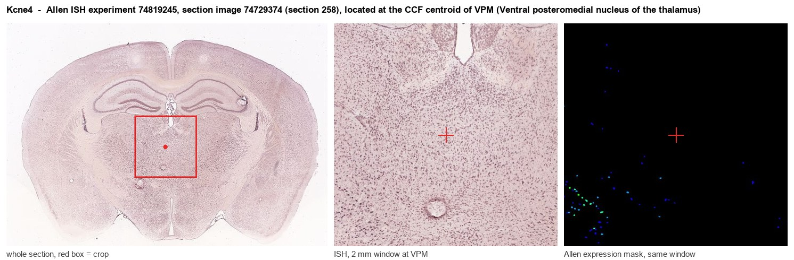
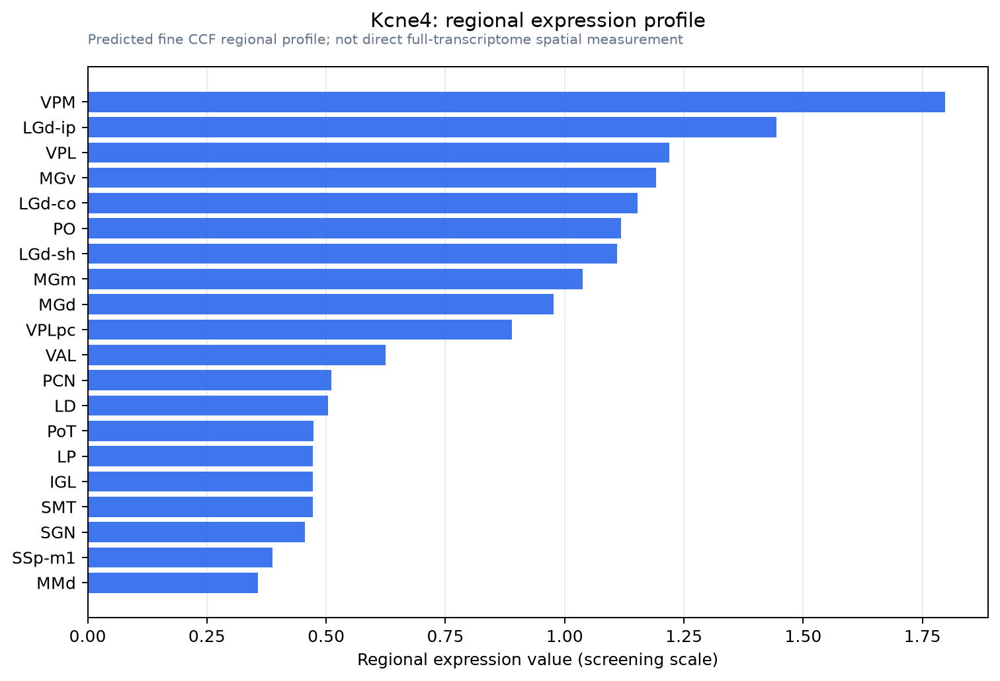

Kcne4
Potassium voltage-gated channel subfamily E member 4 (MinK-related peptide 3) (Minimum potassium ion channel-related peptide 3) (Potassium channel subunit beta MiRP3)
Spatial tier: RESTRICTED · Class: ION_CHANNEL · Top region: VPM (Ventral posteromedial nucleus of the thalamus) · Positive regions: 18/554
Function in VPM: evidence, prediction, innovation
- Gene function
- Kcne4 encodes MiRP3, a single-transmembrane potassium channel beta subunit. Unlike KCNE1 it is mainly inhibitory: it strongly suppresses KCNQ1, Kv1.1 and Kv1.3 currents by slowing activation and reducing surface expression, and it also changes the pharmacology of Kv1.3, altering the potency of channel blockers.
- Region function
- The ventral posteromedial nucleus is the somatosensory relay of the thalamus; its barreloids receive whisker input over the trigeminal lemniscal pathway and project to layer 4 of barrel cortex, gating tactile signals under inhibitory control from the thalamic reticular nucleus.
- Published in this region
- inferred No region-specific literature found. The relevant indirect evidence is that KCNE4's characterised partners Kv1.1 and Kv1.3 are abundant in thalamus and thalamocortical axons: Grunnet 2003 showed KCNE4 is an inhibitory subunit of Kv1.1 and Kv1.3, Grunnet 2002 showed the same for KCNQ1, and Sastre 2024 mapped how KCNE4 rewires Kv1.3 pharmacology. So the nearest finding is that KCNE4 sets the amplitude and drug sensitivity of exactly the Kv1 currents that control thalamic excitability.
- Predicted function
- Prediction: in VPM relay neurons KCNE4 would act as a brake on Kv1-mediated low-threshold potassium current, effectively raising excitability and lowering the threshold for the first spike after a hyperpolarisation. Kcne4 deletion is predicted to increase available Kv1 current, raise spike threshold, alter the fidelity of burst-to-tonic switching and blunt whisker-evoked relay responses. Because KCNE4 also changes Kv1.3 pharmacology, its presence should shift the potency of Kv1 blockers such as 4-aminopyridine and margatoxin in VPM, which is itself a usable assay for whether the subunit is really there.
- Innovation
- ★★★★★ 5/5 A Kv1-suppressing beta subunit in the main whisker relay would be a new handle on thalamic burst firing, and nothing has been published on KCNE4 anywhere in thalamus.
- Tools
- Kcne4 knockout mice from the cardiac literature; Kv1 blockers 4-aminopyridine, dendrotoxin-K (Kv1.1) and margatoxin or ShK (Kv1.3); anti-KCNE4 antibodies; VPM accessible via retro-AAV from barrel cortex and with Slc17a6-IRES-Cre (JAX 028863).
- References
Direct evidence located at the region

Allen ISH experiment 74819245, section image 74729374 (section 258): the section that contains the CCF centroid of Ventral posteromedial nucleus of the thalamus according to the Allen image-to-atlas alignment (reference_to_image), with a 2 mm window around that point. Left: whole section, red box = window. Middle: ISH signal. Right: Allen's expression-mask view of the same window. open this image in the Allen viewer
Direct spatial evidence

Regional expression figure

Predicted WMB × fine-CCF profile; not direct full-transcriptome spatial measurement.
Spatial profile
Evidence and specificity
- Evidence status
- PREDICTED_FINE
- Direct sources
- None; predicted localization only
- Exclusive threshold
- 12 positive regions out of 554
- Spatial specificity
- 0.364
- Top-region fraction
- 0.075
- Filter status
- PASS
Interpretation limits
- Cell-type-to-region projection is imputed expression, not direct spatial measurement.
- Adult reference atlases do not establish stability across age, sex, strain, state, or disease.
- Transcript abundance does not guarantee protein abundance or genetic-tool performance.